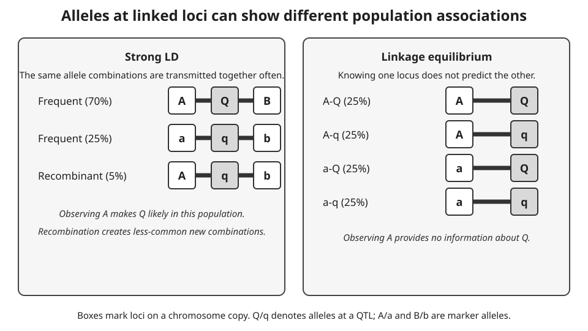
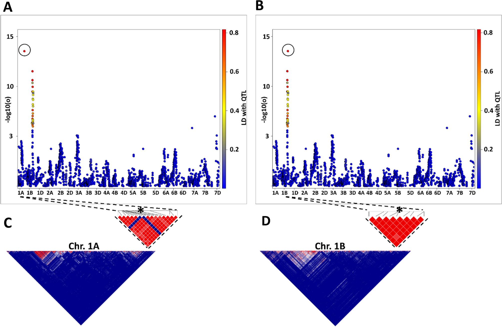
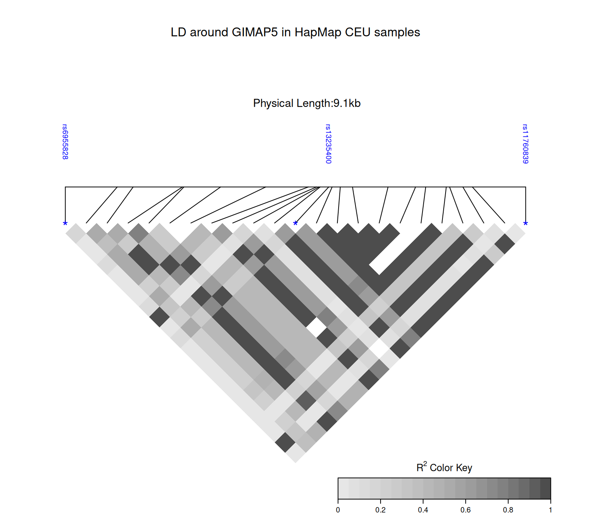

Linkage, recombination, and linkage disequilibrium
A marker can help predict a trait even when the marker itself does not alter the trait. If a marker allele is repeatedly inherited with an allele at a nearby quantitative trait locus (QTL), the marker records part of the chromosome segment that carries the QTL. This information is created and eroded through meiosis and population history. The meiosis section introduced crossing-over; here the focus is how crossing-over affects pairs of loci rather than the stages of cell division.
QTLs locate trait-associated variation
A QTL is a genomic region in which genetic variation contributes to variation in a quantitative trait, such as body weight, growth rate, milk yield, or another trait measured on a numerical scale. Quantitative traits commonly reflect contributions from multiple genomic regions and from environmental conditions. A QTL therefore does not mean that one gene, one allele, or one marker fully determines the trait. It identifies a region whose inherited variation helps explain differences in the trait within the population and study design being considered.
Mapping a QTL usually localises a signal rather than observing its biological cause directly. If alleles in a chromosome segment are associated with trait differences, the causal variant may lie in that segment, but so may many correlated variants. The width of the reported QTL region depends on the number and location of recombination events, marker density, sample size, allele frequencies, and LD in the mapped population. More recombination and more informative observations can narrow a region, but association alone does not establish the causal gene, variant, molecular mechanism, or favourable allele.
Three roles should remain separate. A causal variant changes a biological process relevant to the trait. A QTL is the mapped region that contains, or is associated with, one or more causal variants. A molecular marker is an observed genomic position used to track inheritance. A marker can tag a QTL through LD without being causal. In the recurring project data, the identity of 20 causal SNPs is known because the data were simulated; ordinary marker data do not normally reveal that simulation-only information.
Recombination separates loci at different rates
During crossing-over, homologous chromosomes exchange corresponding DNA segments. A crossover between two loci can put alleles that were on the same parental chromosome onto different chromatids. A gamete is recombinant for a pair of loci when it carries an allele combination that differs from either parental combination. The recombination fraction, usually written \(c\), is the proportion of informative gametes that are recombinant for that pair.
Three distances describe related but different quantities. Physical distance is the separation along the DNA sequence, measured in base pairs (bp). Genetic distance is a map distance inferred from recombination, often reported in centimorgans (cM). For short intervals, one cM corresponds approximately to a 1% recombination fraction. The recombination fraction is an observed probability, bounded above by 0.5, because loci that recombine often are indistinguishable from loci that assort independently when only the two-locus gamete classes are counted.
Physical proximity often leaves less DNA in which a crossover can separate two loci, so nearby loci tend to have lower recombination fractions than distant loci on the same chromosome. The relationship is not constant across a chromosome or across sexes and populations. Recombination hotspots and coldspots make genetic distance expand or contract relative to physical distance, and multiple crossovers can restore the parental arrangement. A base-pair distance is therefore not enough to determine a genetic-map distance or a recombination fraction.
Two loci are linked when they occur on the same chromosome and have a recombination fraction below 0.5. Linkage is a property of their chromosomal arrangement and meiotic transmission. It does not by itself say how often particular alleles occur together in a breeding population.
Linkage disequilibrium is a population association
Consider alleles \(A/a\) at one locus and \(B/b\) at another. If the frequency of the chromosome combination \(AB\) equals the product of the separate allele frequencies, \(p_{AB}=p_Ap_B\), the two loci are in linkage equilibrium. Under this population description, knowing the allele at one locus gives no information about the allele at the other. A departure from that product is linkage disequilibrium (LD): some allele combinations occur more or less often than expected from the single-locus frequencies.
In everyday breeding language, strong LD means that alleles at two or more loci are almost always transmitted together in the population being studied. More precisely, the allele combination occurs much more often than expected from the separate allele frequencies. The left panel of Figure 1 shows this situation: observing marker allele \(A\) makes QTL allele \(Q\) likely because the \(A\)-\(Q\) combination is common, while recombinant combinations are rare. LD can also be weak. The right panel shows linkage equilibrium, where observing \(A\) gives no information about whether the other locus carries \(Q\) or \(q\).

Figure 1: Conceptual comparison of strong linkage disequilibrium and linkage equilibrium. In strong LD, common chromosome copies carry A-Q-B or a-q-b, while an A-q-b recombinant is rare. In linkage equilibrium, A-Q, A-q, a-Q, and a-q occur equally often.
Linkage and LD are therefore not synonyms. Linked loci can be in linkage equilibrium after enough recombination and mixing. Conversely, loci that are far apart, or even on different chromosomes, can show LD after admixture, drift, selection, or recent shared ancestry. The term linkage equilibrium is historical: it describes allele association, not whether loci are on the same chromosome.
The LD phase identifies which allele combinations are overrepresented. If \(AB\) and \(ab\) occur together more often than expected, the association is in coupling phase; if \(Ab\) and \(aB\) are overrepresented, it is in repulsion phase. Coding one allele rather than the other changes the sign used to describe the association, but does not change the underlying chromosome patterns. The next page develops haplotypes and phase in more detail.
Recombination tends to break down LD because it creates new combinations of alleles. In a simple randomly mating population with no other forces, each generation reduces a two-locus LD departure by a factor related to the recombination fraction. This tendency is called LD decay. It is not a universal clock. Mutation introduces new alleles; genetic drift can create or retain associations by chance; admixture combines populations with different allele and haplotype frequencies; and selection can increase an association when particular combinations leave more descendants. Population size, mating design, bottlenecks, and the time since those events also shape the observed pattern.
These histories matter in genomic prediction. A marker may track a nearby QTL in one population because their alleles share an LD phase, then become a weak predictor in another population or a later generation after the phase has changed. Marker-QTL association is evidence about inherited chromosome segments, not proof that the marker is causal.
An empirical LD map from wheat
LD is often displayed as a triangular heatmap in which each cell represents a pairwise comparison among markers in one genomic interval. Figure 2 shows how an LD map can diagnose a marker whose physical position is likely wrong. In the wheat study, panels A and C show a marker assigned to chromosome 1A that has low LD with its nearby markers. After remapping it to chromosome 1B, panels B and D place the same marker, marked by an asterisk, within a local block of high LD. The figure uses colour to encode \(R^2\), but the panel labels, chromosome names, and asterisk identify the comparison described here. This is evidence about marker position and population association, not proof that the highlighted marker is causal for a trait.

Figure 2: GWAS and LDHeatmap panels from a wheat marker-remapping example. The upper panels show genome-wide association results, and the lower panels compare pairwise LD near an asterisked marker on chromosome 1A before correction and chromosome 1B after correction. Said Dadshani and colleagues, source, Figure 1, CC BY 4.0; unchanged.
Tools for inspecting LD
Haploview is a desktop tool that can display a triangular LD plot after genotype or HapMap data are loaded. A reader can inspect the pairwise statistics in an individual cell, view a marker name and minor-allele frequency, and zoom when many markers are present. The display is useful for exploring a dataset, but the choice of LD statistic, marker filters, population, and genomic build must still be reported because each affects interpretation. Other software, including PLINK and TASSEL, can calculate related summaries. The compact example below uses LDheatmap, an R package that draws a pairwise-LD matrix alongside marker positions.
The GIMAP5.CEU example bundled with the package contains genotypes for 116 HapMap CEU individuals at 23 SNPs around the GIMAP5 region on chromosome 7. It provides a denser local pattern than the small project subset used below. Here, LDheatmap calculates pairwise \(r^2\) directly from the genotype matrix and places the result against physical marker positions. This is a realised association in one human population; it is neither a phased-haplotype calculation nor an estimate of recombination. The package is installed once in the R environment, rather than when this page runs. It requires the Bioconductor package snpStats and can then be installed from its public source tarball with install.packages("https://github.com/SFUStatgen/LDheatmap/archive/refs/heads/master.tar.gz", repos = NULL, type = "source").
Code
library(LDheatmap)data("GIMAP5.CEU", package ="LDheatmap")LDheatmap(GIMAP5.CEU$snp.data, genetic.distances =GIMAP5.CEU$snp.support$Position, distances ="physical", LDmeasure ="r", title ="LD around GIMAP5 in HapMap CEU samples", color =grey.colors(20), flip =TRUE, SNP.name =colnames(GIMAP5.CEU$snp.data)[c(1, 12, 23)])

Pairwise linkage disequilibrium (r-squared) among 23 SNPs spanning 9.1 kb around GIMAP5 on chromosome 7, calculated from 116 HapMap CEU individuals supplied with LDheatmap. Each diamond compares one SNP pair: dark diamonds denote high r-squared, meaning the observed alleles co-occur strongly in this sample, whereas light diamonds denote weak association. Contiguous darker regions suggest that nearby markers can tag similar local haplotype information. This population- and marker-specific pattern does not establish that any SNP is causal or directly measure recombination events.
Two realised marker pairs in the project data
The project data contain offspring dosages coded 0, 1, and 2 for a chosen allele at each SNP. The calculation below compares one close pair and one distant pair on chromosome 1. Correlation of these numerical dosages is a convenient summary of the sample association. It is not a direct estimate of the recombination fraction, and it does not reveal haplotype phase without additional information.
SNP004 and SNP005 are 100 kb apart and have dosage correlation \(r\approx0.576\), so \(r^2\approx0.332\). SNP004 and SNP050 are 4.6 Mb apart and have \(r\approx-0.037\), so \(r^2\approx0.001\). The sign of \(r\) depends on the counted-allele coding and LD phase; squaring removes that direction. These are realised dosage correlations for two pairs in this dataset. They do not show that all close pairs have high LD, nor that all distant pairs have low LD.
Physical separation and realised dosage association for two chromosome-1 marker pairs. SNP004-SNP005 is 0.1 Mb apart with r-squared 0.332; SNP004-SNP050 is 4.6 Mb apart with r-squared 0.001.
The figure makes the contrast visible, but it does not establish a general LD-decay curve. Estimating such a curve requires many marker pairs, a stated LD statistic, and careful attention to population structure and marker frequency. The two-pair comparison is enough to show why distance and observed association must be interpreted separately.
Exercises
Two loci are 2 Mb apart on a physical map. Which additional quantity is needed to determine their genetic-map distance in a particular population?
NoteSolution
The recombination pattern across that interval is needed. Physical distance does not specify how often crossovers occur there, so it cannot by itself determine cM or the recombination fraction.
Can loci on different chromosomes show LD? Can linked loci be in linkage equilibrium?
NoteSolution
Yes to both. Admixture, drift, selection, or recent ancestry can associate alleles at loci on different chromosomes. Recombination and mixing can bring linked loci close to linkage equilibrium over time.
A marker is associated with a trait in one breeding population. What can be concluded about the marker itself?
NoteSolution
The result can show that the marker tracks a chromosome segment associated with the trait in that population. It does not establish that the marker is causal, or that its association and phase will transfer to another population or generation.
A QTL study reports an association near a gene. Does this establish that a variant in that gene causes the trait? Explain what the QTL result locates.
NoteSolution
No. A QTL is a genomic region whose variation is associated with trait variation; the result can identify a region without identifying a causal variant or mechanism. Nearby markers may share an inherited pattern with a causal site through LD.
Why can two locus pairs with the same physical separation have different recombination fractions or genetic-map distances?
NoteSolution
Physical distance counts base pairs, whereas recombination depends on how often crossovers occur in that interval. Crossover rates vary along genomes and can differ among populations or sexes, so equal base-pair distances need not correspond to equal recombination fractions or centimorgans.
The project example reports dosage correlations for two marker pairs. Why is this not a general LD-decay curve or a direct estimate of recombination?
NoteSolution
It is a realised numerical association for two chosen pairs in one dataset. The correlation does not reveal haplotype phase or recombination fraction, and two pairs cannot establish a population-wide distance pattern. Estimating LD decay requires many pairs, a stated statistic, and attention to marker frequency and population structure.
LD describes association between alleles at multiple loci, but an unphased diploid genotype does not always identify which alleles share a chromosome. That ambiguity leads to haplotypes and phasing.